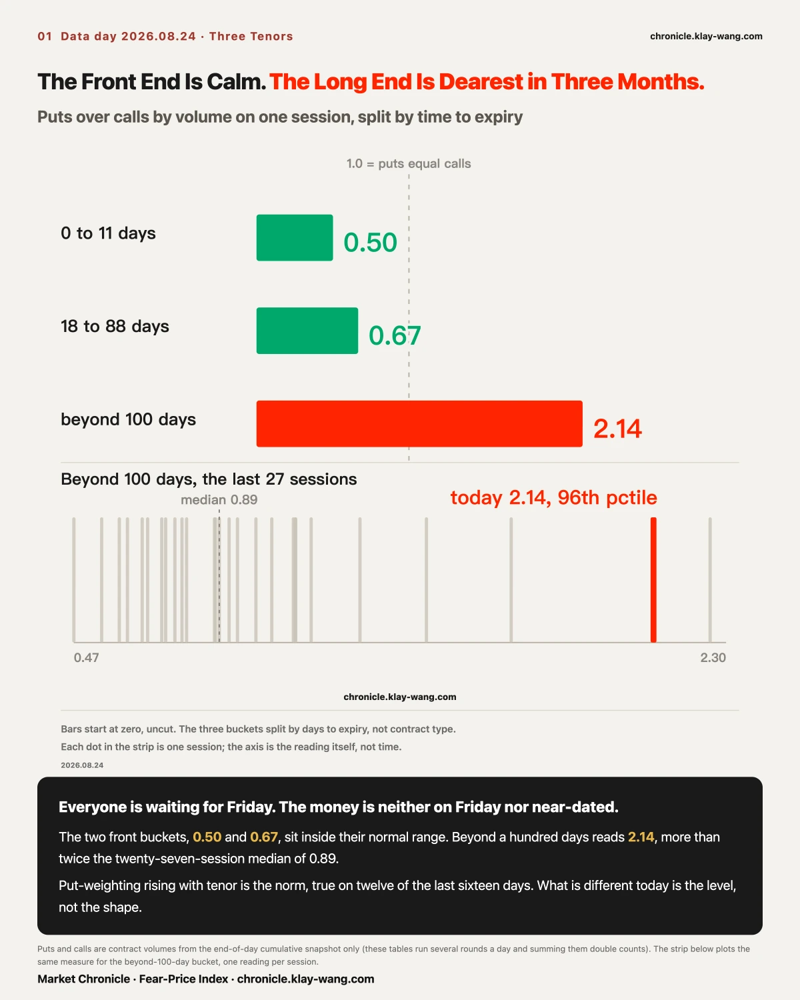
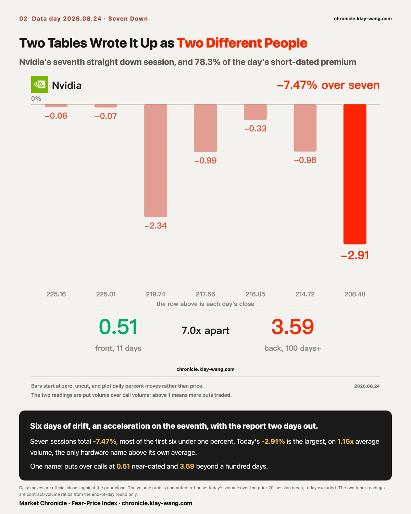
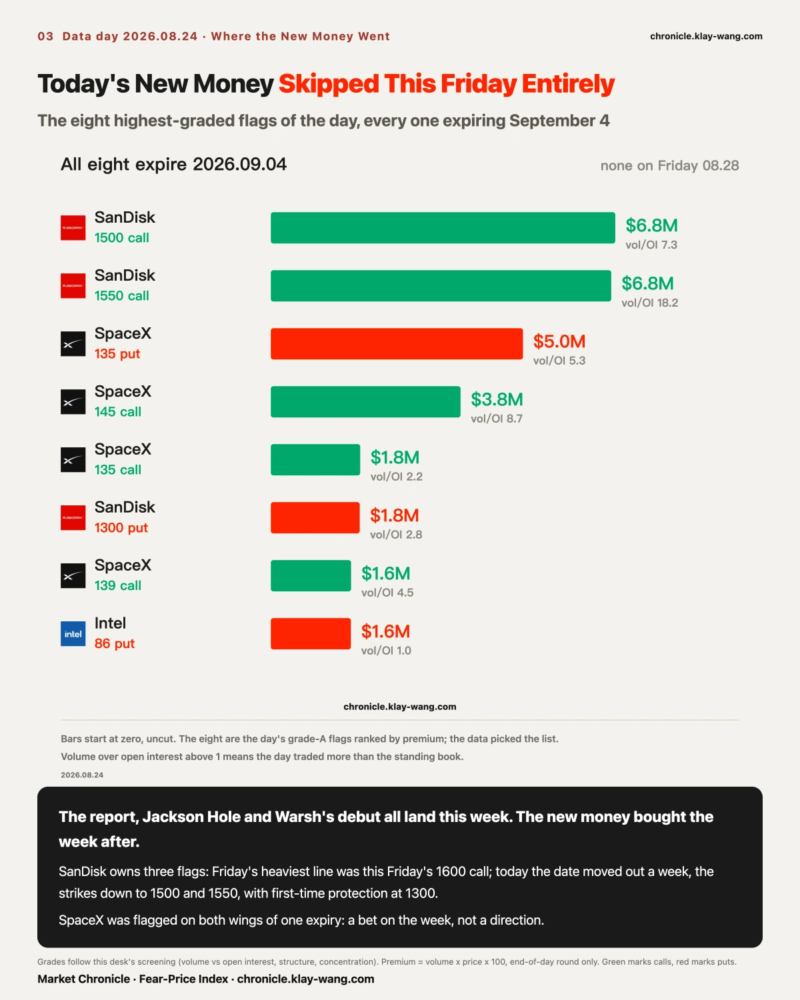
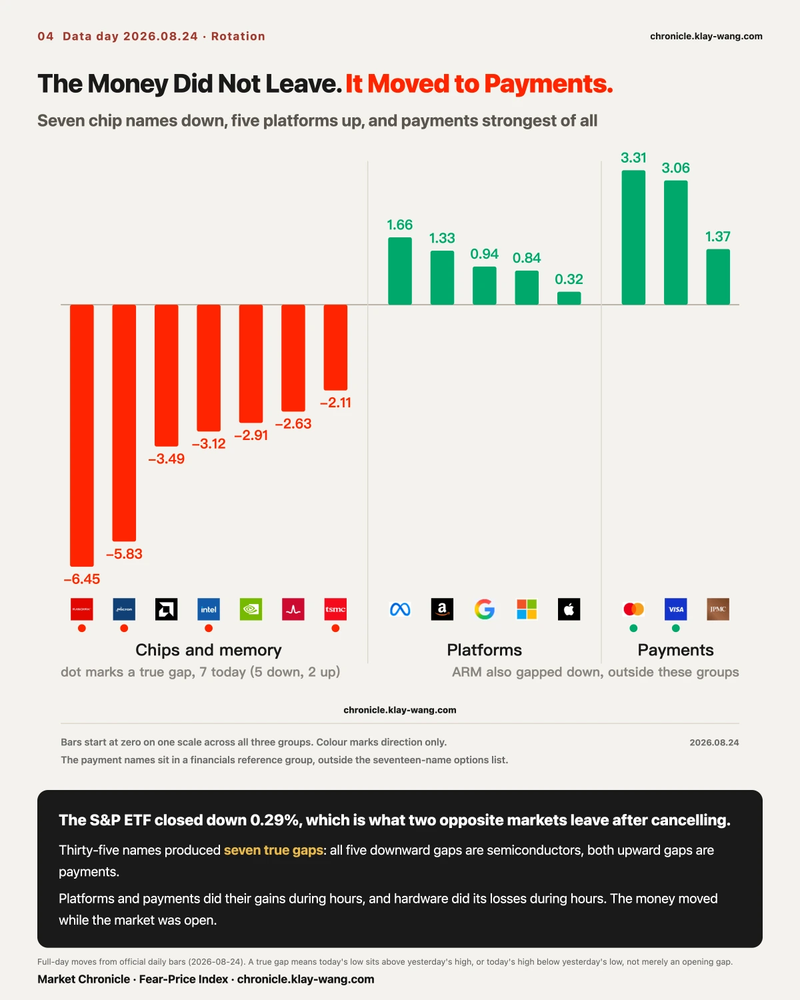
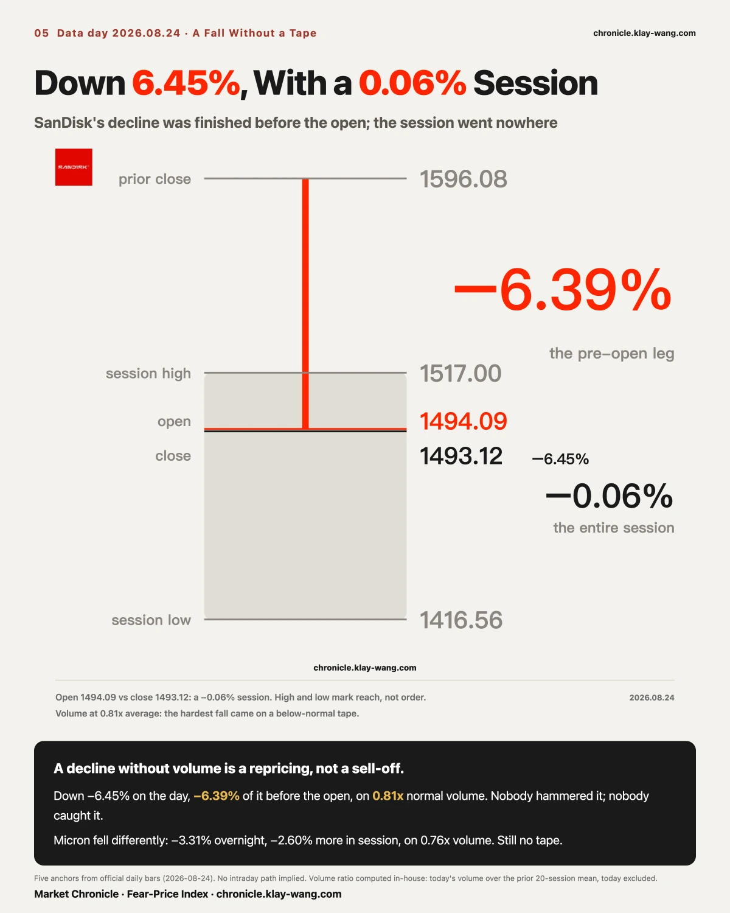
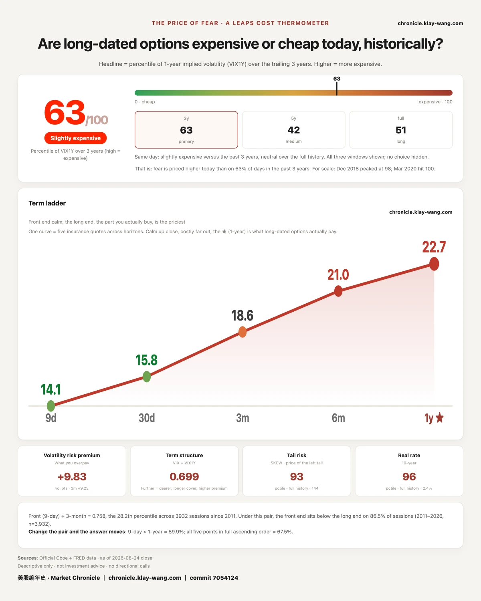

Here is the week as scheduled. Nvidia reports after the close on August 26. Jackson Hole opens on the 27th. Warsh gives his first address as Fed chair on the 28th, with PCE on Wednesday in between. The news calls it a decisive week and the news is right.
The leaderboard says the S&P ETF fell 0.29% today. That number is true, and it is the least informative thing on the tape.
What matters is buried in the expiry dates. Of the eight highest-graded option flags today, every one expires September 4. Not one sits on this Friday.
The same session, protection at the long end was bought to its dearest level in three months. Beyond a hundred days to expiry, puts ran 2.14 times calls by volume, against a twenty-seven-session median of 0.89. The two nearer buckets were unremarkable, 0.50 for zero to eleven days and 0.67 for eighteen to eighty-eight, both inside their normal range.
Everyone is waiting for Friday. The money is neither on Friday nor near-dated. It skipped the week and paid up for insurance further out.
Someone will say immediately that puts outnumber calls at longer tenors as a matter of course, because institutions hedge long-dated exposure. That is simply what a book looks like.
The objection is correct, so the baseline came first. Line the three buckets up by session and twelve of the last sixteen trading days were monotonic. Getting more put-weighted as you go further out is the norm. The shape is not the news. The level is.
In the beyond-one-hundred-day bucket, twenty-seven sessions range from 0.47 to 2.30 with a median of 0.89. Today's 2.14 sits at the 96th percentile, the second highest in the series. The highest was August 13 at 2.30, the day three bounded long-dated put structures were put on the table, which we covered at the time.
Twice in eleven days, the same layer of insurance has been bought up in bulk, and neither occasion fell on a day the index declined.
If the reading drops back under 1.2 over the next two sessions, today was a first-day-after-expiration dislocation and this passage is withdrawn.

On the leaderboard it is today's loser. It closed at 208.48, down 2.91%, a seventh consecutive down session, 225.30 to here, 7.47% in all.
On the premium tape it is the only protagonist. Total short-dated premium came to 299.6 million dollars and Nvidia alone took 78.3% of it, against 32% on Friday. Every flagged dollar on this Friday's expiry is Nvidia's, 140.7 million, with no other name clearing the screen.
One stock, one session, two tables, two entirely different characters.
The shape of the seven days is worth reading. The first six were small steps: 0.06, 0.07, 2.34, 0.99, 0.33, 0.98, most of them under one percent. Today it widened to 2.91% on 135 million shares, the heaviest of the seven, and the only hardware name today trading above its own average volume at 1.16 times. Six days of drift, an acceleration on the seventh, with the report two days out.
Split its options by tenor and the two ends do opposite things. Zero to eleven days: puts at 0.51 of calls. Eighteen to eighty-eight days: 0.44, more call-weighted than the market. Beyond a hundred days: 3.59. The front end buys calls and the back end buys protection, the nearest bucket and the furthest seven times apart.
The two heaviest long-dated lines are both deep out-of-the-money puts. The June 2027 140 put traded 120,406 contracts today against 25,745 of standing open interest, 4.68 times. The January 2027 180 put traded 101,788, 2.11 times. The 140 strike sits 32.9% below today's close, the 180 sits 13.7% below.
Three people look at that contract and see three different things. A manager running billions of long exposure sees insurance, bought so he will not be forced to sell stock after the print. Someone betting on direction sees thirty-two points of room and two and a half years of time. The market maker selling it sees neither insurance nor a bet, but an exposure to be hedged in the underlying. All three send the same order, and on the tape all three look identical.
So what is certain today is not what they were thinking. It is that nobody stood at this level before and today it filled up. Deep out-of-the-money long-dated puts bought in size are most commonly tail hedges, not a wager on collapse.
Open interest on both lines has two sources to check against and they agree within 0.03% and 0.92%. The volumes have only one source, because the second provider's endpoint did not return tonight, which makes those six-figure counts single-source readings.
One more line. Since mid-August one level in the options book has been worth watching, the strike where dealers' net gamma flips sign. Eight consecutive readings sat inside 200 to 210. This morning it left downward for the first time, at 199.09. The written test said the first day outside is the verdict, and a downward exit means the pricing center of gravity has moved lower.
This is easy to misread. The level left the range. The stock did not. Today's close of 208.48 remains 9.39 points above it, Nvidia is still in positive gamma territory, and dealer hedging is still damping its moves. The two are converging, from twenty-two points in mid-August to nine today. The day to wait for is the one where the stock trades below that level, because from then on the same hedging flips from damping moves to amplifying them.

Today's eight highest-graded anomalies share one property: every one expires September 4.
SanDisk owns three. The September 4 1500 call at 6.84 million dollars, the 1550 call at 6.76 million traded at eighteen times open interest, and a 1300 put at 1.77 million. On Friday its heaviest line was this Friday's 1600 call at 14.09 million.
One weekend later, the stock has gone from 1596 to 1493, that position expired, and the new money pushed the date out a week, pulled the strikes down to 1500 and 1550, and for the first time paid for a floor at 1300. The position followed the stock lower. The direction did not change, but it started paying for protection.
SpaceX bought both wings: the September 4 135 put at 5.00 million and the 145 call at 3.76 million. One name, one expiry, both sides flagged the same day. That is not a bet on direction. It is a bet that the week will matter.
This screen admits only contracts with anomalous volume, so falling below threshold is not zero trading. But the threshold was identical on both days, and the list of names above it went from several to one.

The losing side is all chips and memory, seven for seven: SanDisk 6.45%, Micron 5.83%, AMD 3.49%, Intel 3.12%, Nvidia 2.91%, Broadcom 2.63%, TSMC 2.11%.
The winning side has two groups. All five platforms closed higher: Meta 1.66%, Amazon 1.33%, Alphabet 0.94%, Microsoft 0.84%, Apple 0.32%. The strongest group today was payments: Mastercard 3.31%, Visa 3.06%, JPMorgan 1.37%.
Thirty-five names produced seven true gaps today and they sort cleanly: the five downward gaps are all semiconductors (SanDisk, Micron, Intel, TSMC, ARM) and both upward gaps are payments (Visa, Mastercard).
Split the legs. Four of the five platforms did their buying during hours, Meta's session leg at 1.60%, Alphabet 1.29%, Amazon 0.95%, Microsoft 0.85%; Apple is the exception with its entire gain in the gap. Payments were bought during hours too, Mastercard 2.54% and Visa 2.45%. Hardware ran the other way, Nvidia down 3.27% in session, AMD 2.52%, Intel 1.80%, Broadcom 1.70%.
This was not an overnight repricing the day merely watched. But for Apple and SanDisk, money moved from one side to the other while the market was open.
Goldman's trading desk wrote this week that the easy phase of the AI trade is over and that semiconductor and AI momentum has flipped from long to short, with their high-beta momentum basket down 12% on the week. One measures a momentum book, the other measures a single day's tape. Neither explains the other, and today they point the same way.
Anchors first. SanDisk closed Friday at 1596.08, opened at 1494.09, closed at 1493.12, with a high of 1517.00 and a low of 1416.56.
Down 6.45% on the day, of which 6.39 points completed before the open. From open to close it moved 0.06%, on 0.81 times its twenty-day average volume.
Down 6.45%, no direction in session, volume below normal. Nobody hammered it and nobody caught it. The price was rewritten before the open and the session spent six and a half hours walking along it. A decline without volume is a repricing, not a sell-off, and a repricing means the consensus moved without anyone needing to trade.
Micron fell differently: 3.31% overnight, 2.60% more in session, a true gap left behind, volume 0.76 times. Across three sessions these two rose on six tenths of normal volume Thursday, turned lower on half Friday, and fell about 6% on eight tenths today. Volume never returned to average. Friday's line was that in a thin book, whoever shows up sets direction. Today the sellers showed up, still without volume.
A further decline tomorrow above 1.5 times average volume upgrades this from repricing to sell-off and rewrites the passage.

In 2021 someone asked Steve Cohen how he had survived thirty years in markets. He said only three things will kill you: illiquidity, leverage and concentration. One of them might be survivable, two is trouble, all three is whistling past the graveyard.
Of those three, only one ever shows up on the chart you look at. Price tells you when liquidity has failed, but only after it has. Leverage and concentration leave nothing on the chart until they break.
These two names have a public document to test that against. Per 13F filings, a fund heavily weighted in memory at the end of June held SanDisk and Micron as more than 56% of its portfolio across its top six positions, with TSMC also present. Those three fell 6.45%, 5.83% and 2.11% today. Its manager was reported to have written to clients that through more than a hundred block trades totaling over four billion dollars, it disposed of more than 80% of the acquired portfolio's overall risk across ten stocks, before the open on July 30, at a further 10% discount to the prevailing price. The letter is not public, so that portion is secondhand; the 13F portion is officially verifiable but dated end-June, and a two-month-old holding is not a current one.
Blocks do not cross the regular tape and do not enter the daily volume bar. A four-billion-dollar disposal, more than a hundred trades across ten names, appears on no volume chart at all. This is not one vendor missing it. Trades like these never travel that channel.
So today's 0.81 and 0.76 are real, and they measure only the part that goes through the regular tape. When you say a stock is thin today, what you are saying is that it is thin in the channel you can see.
The index behaves like the single names. The S&P ETF ran puts at 2.00 times calls in the eighteen-to-eighty-eight-day bucket and 2.04 beyond a hundred days; the Nasdaq ETF ran 4.27 beyond a hundred days. Its four heaviest lines today were all puts, struck 4.6% to 7.0% below spot. The long-end skew that opened this issue is not confined to single stocks.
Dealer books sit on the same side. Net gamma today was negative 961 million dollars for the S&P ETF and negative 507 million for the Nasdaq ETF. Negative gamma means dealer hedging runs with the market rather than against it, selling into declines. The heaviest single strike, near 625 million, sits at 765, and the S&P ETF closed at 763.47, just underneath it. The spot used in this layer is the prior session's close rather than today's, which matters when comparing across days.
Intel opened new positions on both sides in one session. The October 2 65 put, 25.5% below spot, traded 11,996 contracts against 189 of open interest, 63 times. The September 25 103 call, 18.1% above spot, traded 14,143 against 235, 60 times. The stock fell 3.12% today. Both sides were built from almost nothing, and both sit far from the current price. Further out there is a December 2028 210 call at 5,392 contracts, struck 141% above today's close.
AMD has the most lopsided long end on the list. Beyond a hundred days its puts run 21.83 times calls, with almost no call side at all: December 2027 250 puts, March 2027 320 puts, January 2027 310 puts. It fell 3.49% today.
And one oddity. Amazon's August 31 220 call carried one contract of open interest at last night's close and traded 620 contracts today, 2.58 million dollars. At 16% below today's 262.07 close it is deep in the money, and deep in-the-money calls at that distance are usually a stock-replacement tool rather than a directional bet. Amazon pays no dividend, so the usual dividend-capture explanation for that family does not apply here. There is no clean explanation for this one. Tomorrow morning's open interest will answer it.
Last week the Treasury at least doubled its long-bond buybacks. Yields held down for less than a day and finished the week roughly flat, while the dollar fell nearly 1% and gold cleared 4600. A strategist at Nomura called the combination a pressure-release valve: hold the long end down and the anxiety surfaces elsewhere.
Desks converged this week on one date, Warsh's first Jackson Hole address on August 28. He has given almost no forward guidance since taking office in May, and his remarks after the last FOMC meeting were followed by a bond selloff. A Bloomberg strategist put it most plainly: the Treasury can change the maturity structure of the debt, but only the Fed can anchor inflation expectations.
The market is not guessing at the content of the speech. It is pricing his reaction function, meaning whether this person acts when inflation is sticky and the fiscal position is deteriorating. Content is digested in a day. A reaction function gets retested on every data release afterward.
Which is why money on September 4 is more internally consistent than money on August 28. The 28th delivers a set of words. September 4 delivers the first price after the market has finished digesting them.

Today's reading is 63, against 62 on Friday. Friday carried a written test: a return above 68 on a day the index did not fall would mark that expiration-day dip as mechanical. The S&P ETF fell 0.29% today and the reading printed 63.4, so neither condition was met and the mechanical explanation stays unconfirmed.
What matters is which tenor did the rising. Nine-day went from 12.58 to 14.07. One-month, 15.13 to 15.85. Three-month, 18.50 to 18.56. Six-month, 20.90 to 21.04. One-year, 22.64 to 22.69, a move of 0.05.
The front end rose 1.49, the long end 0.05. Everything that got more expensive today got more expensive within the next few days only.
The same session, the Cboe SKEW index printed 143.9, in the 92.9th percentile of its full history. That index measures what the market pays for an extreme decline.
There is a finer price to check. Take the two index ETFs' contracts expiring a year out and compare them strike by strike across the two sessions: not one of twenty-four strikes got more expensive. On the S&P side the put wing fell an average of 0.72 points, the deepest strike by 0.81, while the call wing fell 0.38. Both wings of the Nasdaq fell about 0.2.
The steepest declines came on the put side. On the same day that volume went to the long end to buy protection, the quoted price of that protection did not rise strike by strike. It fell, and it fell most on the side that does the protecting.
Prices say the far end did not get more expensive. Volume says someone out there is buying protection. When two instruments disagree you do not have to pick one. What is certain today is that they disagree, and the disagreement has a specific meaning: the people buying insurance have moved, but not in numbers large enough to make the sellers raise the price. It is also clear when that stops being true. If the one-year reading starts following the volume higher over the next two sessions, the sellers have begun to charge for it, and from that day the two instruments point the same way again.
Friday's headline asked why the market would not believe the day's biggest gainer. The test was written down: if Tesla stopped rising and the one-year reading lifted through 49, the stillness was a slow reaction; if it stayed near 48, the rally was never accepted by the long end.
Today settles it. Tesla fell 3.83% to 348.95 and the one-year reading printed 48.15.
Three readings in order: 48.28 last Thursday; a 5.14% rally on Friday moved it 0.04; a 3.83% decline today moved it 0.09. The stock traveled nearly nine percentage points there and back in two sessions and its one-year price moved 0.13 in total. The long end did not miss the rally. It never intended to reprice for it.
The same name changed character on the same table. Friday it carried the second heaviest premium on the tape at 164.3 million dollars; today the same table shows 10.3 million. And Friday's call ladder from 340 to 380 had its heaviest rung at 350, while today's close of 348.95 sits below that rung. The buyers who paid 23 million for it on Friday spent one weekend watching it cross from in the money to out.
Today's 96th-percentile long-end put buying reads easily as someone betting on a crash. A comparable set of positions went on last Wednesday, and it is now old enough to check. The answer runs the other way.
On August 19, four September 11 index put strikes printed in two matched pairs with near-identical volume: the Nasdaq ETF 705 put at 33,448 contracts against the 680 put at 33,349, a gap of 0.3%; the S&P ETF 760 put at 33,945 against the 740 put at 33,753, a gap of 0.6%. The call at the time was that this is not a crash bet but the two legs of a vertical spread, buying the near strike and selling the lower one, with the payoff capped between them. The written test: check both legs' open interest the next day; if both rise by similar amounts the spread holds, and if only the near strike rises while the lower one sits still, it does not.
All four legs rose together. Nasdaq 705 went from 1,372 contracts to 33,721 and the 680 from 1,444 to 34,088; S&P 760 went from 1,923 to 34,964 and the 740 from 2,599 to 33,707. The four increases run between 31,100 and 33,000 contracts, within 2,000 of one another. No leg moved alone. The spread holds.
Three sessions later the positions are still on the books: S&P 740 puts at 34,382, 760 puts at 35,115, Nasdaq 705 puts at 34,080. Five days after they were built, not one has been closed.
So heavy long-dated put buying and a crash bet are two different things. A bounded spread pays for a defined stretch of downside and pays nothing past its lower strike; an outright put pays for everything below. The first is an insurance buyer managing the premium, the second is a directional bet. Today's 2.14 contains both, and the ratio alone cannot separate them. What separates them is whether there is a matching second leg.
One note on scope: on August 20 only the Nasdaq 705 strike cleared the anomaly screen, so the other three readings are from August 21. This table admits only contracts with anomalous volume, and falling below that threshold does not mean the position changed.
No instructions, only translations.
If you hold Nvidia or anything tied to its report: 78% of today's short-dated premium sat on this one name, its heaviest line pressed against the current price buying both sides of one day, which is movement rather than direction. Meanwhile its long end runs puts at 3.59 times calls. If you plan to act around the report, know whether you are underwriting direction, movement or insurance, because those three are priced very differently today.
If you hold memory: three straight sessions of 6%-scale moves on below-average volume. And today's filing is a reminder that the volume you can see is only the part crossing the regular tape.
If you hold payments or platforms: today's only two upward true gaps were both in payments, and both groups did their gains during market hours. That is the one place today where someone was actively adding while the market was open.
If you hold nothing and are waiting: not one of today's eight top flags is on this Friday. The market cleared its least certain day off its own table, which is more honest than any opinion. And near-dated insurance remains the cheapest stretch of the curve, nine-day at six tenths of one-year.
The week the news calls decisive and the week the money sits on can be two different weeks. When a date is known to everyone, what gets priced first is often not that day but the first price after it.
The front and back ends of one name can do opposite things on the same day. Reading a stock's options at a single expiry is hearing one word of a sentence.
Prices say the far end did not get more expensive; volume says someone is buying protection there. When two instruments disagree you do not have to pick one. That the willing payers are not yet numerous enough to move the price is itself today's reading.
Whether that 2.14 was a first-session-after-expiration dislocation. If the beyond-one-hundred-day ratio falls back under 1.2 within two sessions this passage is withdrawn; holding above 1.8 means deliberate positioning. Long-dated table, EOD round only, rounds filtered before any cross-session comparison.
Whether Nvidia's 26.3 million in 210 calls, at 4.9 times open interest, survives tomorrow's settlement. Open interest against today's volume, read tomorrow morning or abandoned with a stated reason, no later than August 25.
Those two six-figure deep out-of-the-money put lines carry one volume source tonight. Obtain a second source tomorrow; if it disagrees, correct it in the next issue rather than letting it fade.
Nvidia after seven down sessions. An eighth session closing higher on below-average volume marks today as the resolution of six days of drift; continued heavy selling through 199.09 is the first confirmation the center of gravity has moved.
Day four of the memory repricing. A further decline above 1.5 times volume upgrades it to a sell-off and rewrites that passage; continued shrinkage keeps it.
Whether new money's skip past August 28 outlives the first session after expiration. Re-concentration within two sessions withdraws the reading.
Fear-Price after 63. Unchanged: the mechanical reading holds only if the index does not fall and the reading returns above 68. Neither condition was met today.
Amazon's 620-contract deep in-the-money call. If open interest tomorrow rises toward 600 someone built a stock-replacement position; if it returns to single digits it was a round trip. Today's explanation is inadequate; tomorrow it gets completed or explicitly abandoned.
Fear-Price Index · 2026-08-24 · reading 63/100: The one-year volatility benchmark VIX1Y stands at 22.69, in the 63rd percentile of the past three years. Higher means fear is priced dearer. Daily ledger and methodology → chronicle.klay-wang.com · Attribution: Fear-Price Index · Market Chronicle